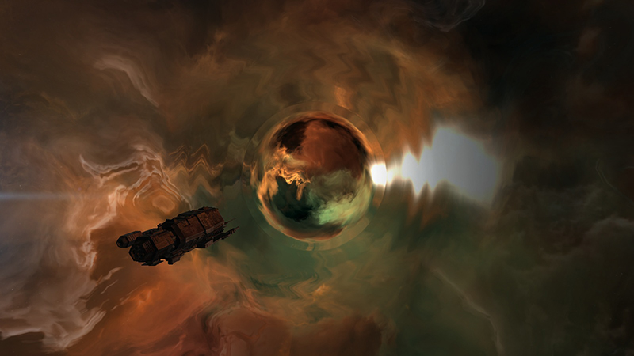

Trou de ver et systèmes cachés
Version 1.0 - Inspiré de Eve Online
Explications
Lors d’une exploration, le joueur pourra trouver un trou de ver, c’est-à-dire un portail stellaire menant à un système connu ou caché. Ces portails seront ouverts de manière provisoire : ils seront limités en volume et en temps. Donc vous ne pourrez y faire passer qu’un nombre de vaisseaux dont le volume total ne dépasse pas celui supporté par le trou de ver. Et vous devrez le traverser avant que celui-ci n’ait atteint la fin de sa durée de vie. Une fois ce volume ou cette durée atteint, le trou de ver se referme. Les durées de vie oscilleront entre 24 et 48h.
Les trous de ver mèneront parfois à des système connus : cela peut être le système juste à côté de chez vous, ou bien un se trouvant de l’autre côté de l’univers. Et ils mèneront parfois à des systèmes inconnus. Ces systèmes auront des sécurités nulles voire négatives. Avec parfois pas de soleil, ou parfois pas de planètes. Mais en contrepartie, les planètes qu’ils abriteront seront énorme et seront les plus abondantes en ressources du jeu.
La seule possibilité pour un joueur ayant colonisé une de ces planètes pour faire voyager des flottes entre ce système et les systèmes traditionnels, sera de posséder une lune avec un portail stellaire.
Exemple
La photo ci-dessous est tirée de Eve Online. On y voit un vaisseau s'apprettant à renter dans un trou de ver. (Voir en grand)
{kind=link}

Améliorations
Si vous avez d'autres idées, que vous désirez poster un avis ou un commentaire, n'hésiter pas à me contacter.